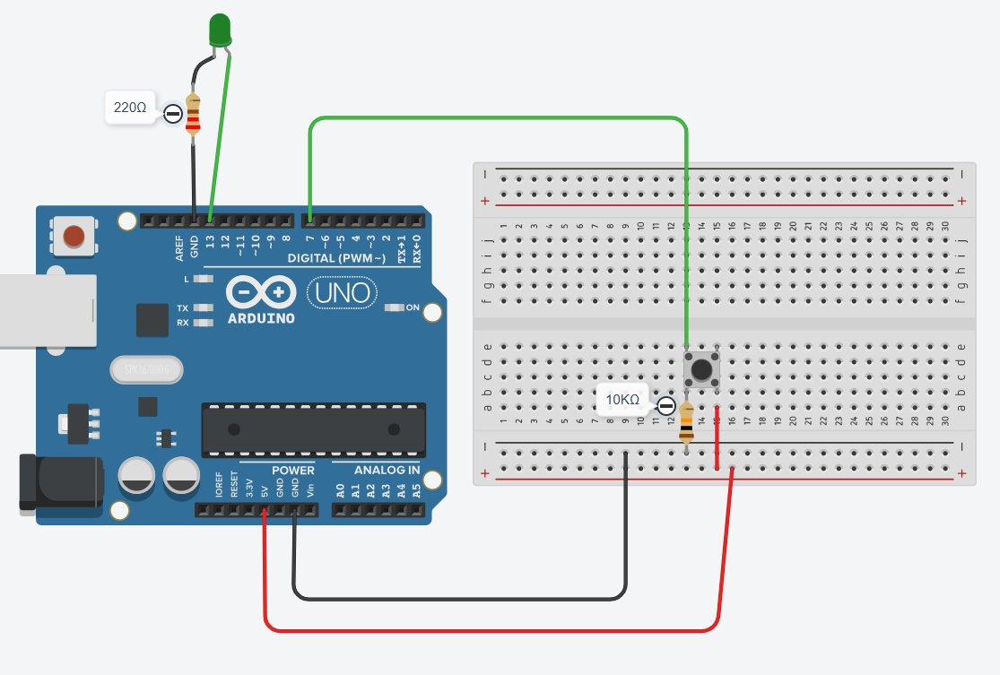

IF-ELSE: el LED responde siempre, pulses o no pulses
digitalRead(7) == HIGH
El botón está pulsado → corriente fluye al pin 7.
Acción: encender el LED.
digitalRead(7) == LOW
El botón está suelto → pull-down fuerza el pin a 0 V.
Acción: apagar el LED.
⚠️ La resistencia pull-down (10 kΩ) es imprescindible. Sin ella el pin 7 flota cuando el botón está suelto y el programa toma decisiones incorrectas. Con ella, el ELSE siempre recibe un LOW limpio.
Mismo circuito que S01 pero ahora el programa toma dos decisiones:
👉 Pulsas el botón → LED encendido (HIGH).
👉 Sueltas el botón → LED apagado (LOW).
El LED siempre refleja el estado del botón, en tiempo real.

Circuito en Tinkercad — pulsador pin 7 · pull-down 10 kΩ · LED pin 13 · 220 Ω
1. Monta el circuito en Tinkercad.
2. Escribe el código y simula.
3. Comparte el proyecto (botón Compartir).
4. Copia el enlace y pégalo en tu ficha.
5. Entrega la ficha en Classroom.